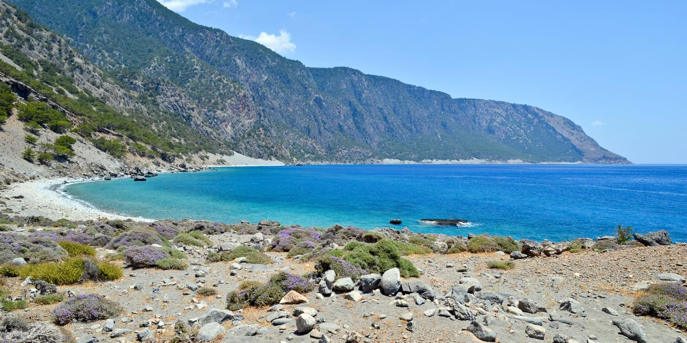

Vind hier waarom je toch naar griekenland zou moeten gaan
Griekenland heeft in de zomer hoge temperaturen en veel zon. Griekenland heeft het warmste klimaat van alle Zuid-Europese landen. Op Kreta bijvoorbeeld, schijnt de zon 300 dagen per jaar! Vanaf het voorjaar tot eind oktober is het heerlijk toeven in Griekenland.
De geweldige Griekse keuken
Het eten in Griekenland is beter, lekkerder en gezonder dan waar dan ook, niet alleen omdat familierecepten door generaties zijn geperfectioneerd in de loop van de tijd, maar omdat Grieks eten altijd is gebaseerd op verse en pure producten.
De gastvrijheid, vrijgevigheid en vriendelijkheid van de Griekse bevolking
In welk land krijg je een toetje “van het huis” aangeboden na een heerlijke maaltijd? In welk land krijg je als voorbijganger bijvoorbeeld druiven, raki, koekjes, een sinaasappel of een glas water aangeboden? In welk land krijg je voor de maaltijd een ouzo aangeboden? Grieken zijn over het algemeen zeer vriendelijke mensen die openstaan voor hun bezoekers en graag een praatje met toeristen maken.
Griekenland is niet zo ver weg
Griekenland is makkelijk te bereiken. Rechtstreeks met het vliegtuig is het gemiddeld drie uurtjes vliegen, maar het is ook prima bereikbaar per auto, camper en boot. Reizen naar Griekenland zijn eenvoudig via internet te boeken.
Minder stress in Griekenland
In Griekenland leven de mensen op een rustigere manier, waarbij minder stress voorkomt. “Siga Siga” (langzaam, langzaam) is een veel gehoorde opmerking. Maar ook de uitspraak: ”no problem” zal je vaak in Griekenland horen. Mensen die naar Griekenland gaan voelen zich minder gestrest en gewoon gelukkiger!